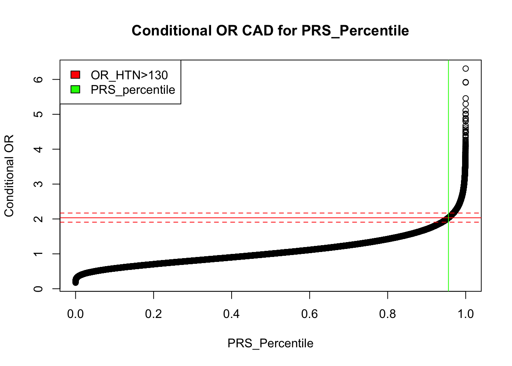

prs_equivalency
Sarah Urbut
2021-09-11
Last updated: 2021-09-12
Checks: 7 0
Knit directory: natarajanlab_wiki/
This reproducible R Markdown analysis was created with workflowr (version 1.6.2). The Checks tab describes the reproducibility checks that were applied when the results were created. The Past versions tab lists the development history.
Great! Since the R Markdown file has been committed to the Git repository, you know the exact version of the code that produced these results.
Great job! The global environment was empty. Objects defined in the global environment can affect the analysis in your R Markdown file in unknown ways. For reproduciblity it’s best to always run the code in an empty environment.
The command set.seed(20210512) was run prior to running the code in the R Markdown file. Setting a seed ensures that any results that rely on randomness, e.g. subsampling or permutations, are reproducible.
Great job! Recording the operating system, R version, and package versions is critical for reproducibility.
Nice! There were no cached chunks for this analysis, so you can be confident that you successfully produced the results during this run.
Great job! Using relative paths to the files within your workflowr project makes it easier to run your code on other machines.
Great! You are using Git for version control. Tracking code development and connecting the code version to the results is critical for reproducibility.
The results in this page were generated with repository version 2a4f6c3. See the Past versions tab to see a history of the changes made to the R Markdown and HTML files.
Note that you need to be careful to ensure that all relevant files for the analysis have been committed to Git prior to generating the results (you can use wflow_publish or wflow_git_commit). workflowr only checks the R Markdown file, but you know if there are other scripts or data files that it depends on. Below is the status of the Git repository when the results were generated:
Ignored files:
Ignored: .DS_Store
Ignored: .Rhistory
Ignored: analysis/.Rhistory
Ignored: analysis/metaplot_strat_torus.nb.html
Ignored: analysis/monster_mash.nb.html
Ignored: analysis/prs_equivalency.nb.html
Ignored: analysis/testplot.nb.html
Untracked files:
Untracked: analysis/metatrials_sim.Rmd
Untracked: analysis/monster_mash.Rmd
Untracked: analysis/testplot.Rmd
Untracked: analysis/torus.Rmd
Unstaged changes:
Modified: analysis/metaplot_strat_torus.Rmd
Note that any generated files, e.g. HTML, png, CSS, etc., are not included in this status report because it is ok for generated content to have uncommitted changes.
These are the previous versions of the repository in which changes were made to the R Markdown (analysis/prs_equivalency.Rmd) and HTML (docs/prs_equivalency.html) files. If you’ve configured a remote Git repository (see ?wflow_git_remote), click on the hyperlinks in the table below to view the files as they were in that past version.
| File | Version | Author | Date | Message |
|---|---|---|---|---|
| Rmd | 2a4f6c3 | Your Name | 2021-09-12 | wflow_publish("analysis/prs_equivalency.Rmd") |
| html | 13717f6 | Your Name | 2021-09-12 | Build site. |
| Rmd | 04a1e1c | Your Name | 2021-09-12 | wflow_publish("analysis/prs_equivalency.Rmd") |
| html | eeb3abd | Your Name | 2021-09-12 | Build site. |
| Rmd | 71f8dce | Your Name | 2021-09-12 | wflow_publish("analysis/prs_equivalency.Rmd") |
| html | db7e138 | Your Name | 2021-09-11 | Build site. |
| Rmd | 82e8dbd | Your Name | 2021-09-11 | wflow_publish("analysis/prs_equivalency.Rmd") |
| html | f274bfe | Your Name | 2021-09-11 | Build site. |
| html | 8a3acc7 | Your Name | 2021-09-11 | Build site. |
| Rmd | 733145a | Your Name | 2021-09-11 | wflow_publish("analysis/prs_equivalency.Rmd") |
| html | ba9b2fb | Your Name | 2021-09-11 | Build site. |
| html | eb2ea1a | Your Name | 2021-09-11 | Build site. |
| Rmd | b13728e | Your Name | 2021-09-11 | wflow_publish("analysis/prs_equivalency.Rmd") |
Introduction
We want to understand the equivalent quantile of PRS risk that equates with risk conveyed by traditional risk factors.
First, we organize the data:
rm(list=ls())
prs=read.table("~/Dropbox/cad_AnnoPred.profile",header=T)
cov=read.table("~/Dropbox/big_ukb_file.txt",header=T,sep="\t")
ukb_adj_cov=read.table("~/Dropbox/PRS_gwas_mashr/UKB.4700.adj.cov",header=T)
i=as.character(intersect(intersect(prs$IID,cov$id),ukb_adj_cov$FID))
rownames(prs)=prs$IID
rownames(cov)=cov$id
rownames(ukb_adj_cov)=ukb_adj_cov$FID
df=na.omit(data.frame(prs[i,],"cad"=cov[i,"Coronary_Artery_Disease"],cov[i,c("PC1","PC2","PC3","PC4","PC5")],ukb_adj_cov[i,c(3:7)]))
df$SCORESUM=-1*df$SCORESUMdf=readRDS("~/Dropbox/df_ukb.rds")
head(df) FID IID PHENO CNT CNT2 SCORESUM cad PC1 PC2
5242202 0 5242202 -9 5988134 3026087 -15.1677 0 -11.3162 3.79643
3505382 0 3505382 -9 5988138 3008018 -15.1253 1 -12.0046 2.83783
2363750 0 2363750 -9 5988140 3029080 -15.1855 0 -12.8365 4.92501
3144043 0 3144043 -9 5988140 3015977 -15.0858 0 -12.5234 1.47994
1654411 0 1654411 -9 5988138 3006256 -15.0217 0 -10.8585 5.43386
1761006 0 1761006 -9 5988140 3006698 -15.1536 0 -12.3393 1.43565
PC3 PC4 PC5 LDL_adj TG_adj TC_adj AGE SEX
5242202 -3.379320 0.514730 -8.576770 129.3227 103.27724 185.8082 60 1
3505382 -1.389230 -0.221419 -9.615220 160.7557 209.74314 223.4629 69 1
2363750 -2.777050 6.334590 -3.399210 130.2011 76.08503 220.1856 58 1
3144043 -1.595140 4.584990 12.096200 95.0116 63.68468 193.1941 45 0
1654411 0.516084 0.985193 -0.696523 149.8453 87.15678 233.0240 43 1
1761006 -3.092750 0.502698 -3.188080 167.7881 259.61028 271.3457 62 0Note that SCORESUM is actually the opposite direction (increasing score is protective) so we take the opposite. Now, let’s fit some simple logistic regression:
pr_logit=glm(df$cad~df$SCORESUM)#+df$PC1+df$PC2+df$PC3+df$PC4+df$PC5+df$AGE+df$SEX)
exp(coef(pr_logit))(Intercept) df$SCORESUM
13.397203 1.183441 ldl_logit=glm(df$cad~df$LDL_adj)#+df$PC1+df$PC2+df$PC3+df$PC4+df$PC5+df$AGE+df$SEX)
exp(coef(ldl_logit))(Intercept) df$LDL_adj
1.018136 1.000172 tc_logit=glm(df$cad~df$TC_adj)#+df$PC1+df$PC2+df$PC3+df$PC4+df$PC5+df$AGE+df$SEX)
exp(coef(tc_logit))(Intercept) df$TC_adj
1.0904007 0.9998101 ##Considering Risk
Now, let’s consider how the oR of CAD increases with each quantile of PRS and med-adjusted LDL:
Recall that to convert to quantile, simply subtract mean and divide by SD.
prs_quantiles=(df$SCORESUM-mean(df$SCORESUM))/sd(df$SCORESUM)
ldl_quantiles=(df$LDL_adj-mean(df$LDL_adj))/sd(df$LDL_adj)
### Now predict the model fit
p=exp(predict(pr_logit))
l=exp(predict(ldl_logit))##Predicting Risk
Now, we wish to consider how the quantiles of PRS risk compare to LDL, and how a model which includes only PRS or ldl_adjusted compares with cumulative distribution functions:
par(mfrow=c(1,3))
plot((rank(df$SCORESUM)/length(df$SCORESUM)),p,
main="predicted risk vs PRS quantiles",ylab="Predicted Risk of CAD",ylim=c(0.90,1.20),xlab="quantile")
plot(rank(df$LDL_adj)/length(df$LDL_adj),l,main="predicted risk vs LDL-adj quantiles",ylab="Predicted risk of CAD",ylim=c(0.90,1.20),xlab="quantile")
plot(df$LDL_adj,l,main="predicted risk vs LDL-adj",ylab="Predicted risk of CAD",ylim=c(0.90,1.20))
abline(v=190)
Now I consider discriminant analysis: how does the distirbution of CAD and LDL score discriminate between CAD and CAD free folks:
r=(rank(df$SCORESUM)/length(df$SCORESUM))
par(mfrow=c(1,2))
plot(density(r[df$cad==1]),col="red",main="PRS Score Distribution by CAD class",xlab="Quantile Score")
lines(density(r[df$cad==0]),col="green")
legend("bottomright",c("cad free","cad present"),col=c("green","red"),pch=1)
plot(density(df$LDL_adj[df$cad==0]),col="green",main="LDL Value Distribution by CAD class",xlab="quantile LDL-adjusted")
lines(density(df$LDL_adj[df$cad==1]),col="red")
legend("bottomright",c("cad free","cad present"),col=c("green","red"),pch=1)
| Version | Author | Date |
|---|---|---|
| eeb3abd | Your Name | 2021-09-12 |
And now we consider the cumulative distribution of Predicted CAD risk using only PRS or LDL-adjusted as predictors:
par(mfrow=c(1,2))
plot(ecdf(p),main="CDF of predicted risk using PRS",xlab="Predicted Risk")
plot(ecdf(l),main="CDF of predicted risk usingLDL-adjusted",xlab="Predicted Risk")
| Version | Author | Date |
|---|---|---|
| eeb3abd | Your Name | 2021-09-12 |
So, the 50% of LDL and PRS are roughly equivalent in a univariate probit model estimating risk of CAD.
Let’s consider how the distribution of LDLand PRS looks for individuals with and without CAD:
par(mfrow=c(1,2))
boxplot(df$LDL_adj[df$cad==0],main="Distribution of LDL-adjusted by CAD 0",xlab="CAD=0")
boxplot(df$LDL_adj[df$cad==1],main="Distribution of LDL-adjusted by CAD = 1",xlab="CAD=1")
| Version | Author | Date |
|---|---|---|
| 13717f6 | Your Name | 2021-09-12 |
par(mfrow=c(1,2))
boxplot(r[df$cad==0],main="Distribution of PRS Quantile by CAD = 0",xlab="CAD=0")
boxplot(r[df$cad==1],main="Distribution of PRS Quantile by CAD = 1",xlab="CAD=1")
| Version | Author | Date |
|---|---|---|
| 13717f6 | Your Name | 2021-09-12 |
To answer the question: at what quantiles is the risk predicted by PRS equivalnet to LDL>190, first we find the risk equivalency of LDL>190:
m=min(l[which(df$LDL_adj>190)])
m[1] 1.052058Now, we ask which quantils of PRS risk are greater than or equal to this:
min(r[which(p>m)])[1] 0.679349So the 67% of PRS risk is equivalent to LDL >190.
sessionInfo()R version 4.0.2 (2020-06-22)
Platform: x86_64-apple-darwin17.0 (64-bit)
Running under: macOS 10.16
Matrix products: default
BLAS: /Library/Frameworks/R.framework/Versions/4.0/Resources/lib/libRblas.dylib
LAPACK: /Library/Frameworks/R.framework/Versions/4.0/Resources/lib/libRlapack.dylib
locale:
[1] en_US.UTF-8/en_US.UTF-8/en_US.UTF-8/C/en_US.UTF-8/en_US.UTF-8
attached base packages:
[1] stats graphics grDevices utils datasets methods base
other attached packages:
[1] workflowr_1.6.2
loaded via a namespace (and not attached):
[1] Rcpp_1.0.7 whisker_0.4 knitr_1.33 magrittr_2.0.1
[5] R6_2.5.0 rlang_0.4.11 fansi_0.5.0 highr_0.9
[9] stringr_1.4.0 tools_4.0.2 xfun_0.24 utf8_1.2.2
[13] git2r_0.28.0 jquerylib_0.1.4 htmltools_0.5.1.1 ellipsis_0.3.2
[17] rprojroot_2.0.2 yaml_2.2.1 digest_0.6.27 tibble_3.1.3
[21] lifecycle_1.0.0 crayon_1.4.1 later_1.2.0 sass_0.4.0
[25] vctrs_0.3.8 promises_1.2.0.1 fs_1.5.0 glue_1.4.2
[29] evaluate_0.14 rmarkdown_2.9 stringi_1.7.3 bslib_0.2.5.1
[33] compiler_4.0.2 pillar_1.6.1 jsonlite_1.7.2 httpuv_1.6.1
[37] pkgconfig_2.0.3